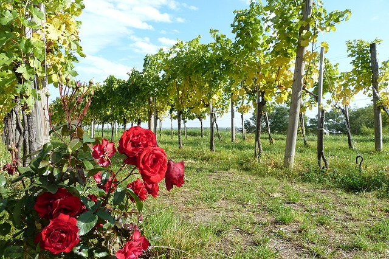
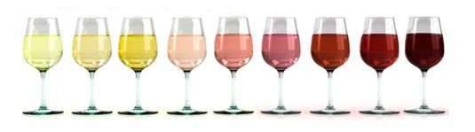
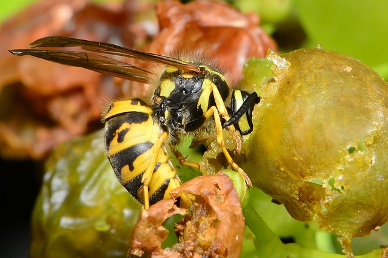
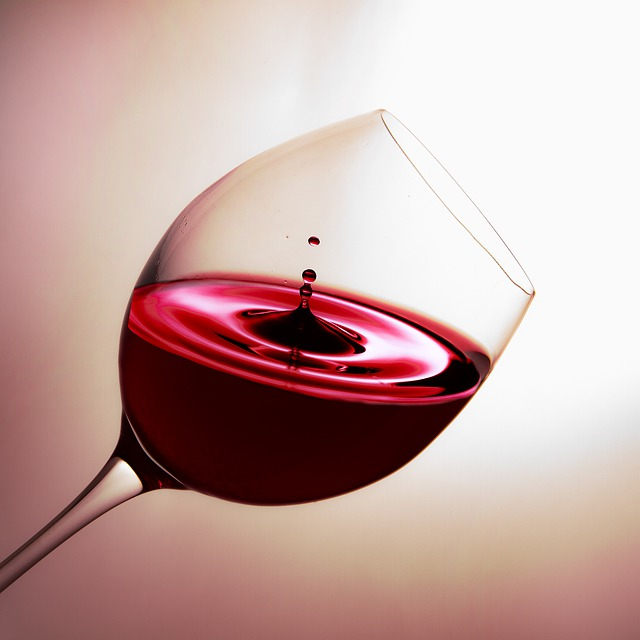

- Rosales en los viñedos
-

No se trata de una cuestión estética, sino que más bien una medida preventiva: Los rosales y las viñas son sensibles a los ataques de hongos.
La enfermedad denominada oidio, temida por los viticultores, la produce un hongo que podría acabar con la cosecha; las hojas de los rosales son las primeras en mostrar las manchas de haber sido atacadas por este hongo, por lo que es la señal de alarma para que se puedan tomar las medidas de prevención necesarias para que la enfermedad no se desarrolle en el viñedo. - El vino no tiene color
-

https://xn--vinosenespaa-khb.com/color/ El mosto de la inmensa mayoría de las uvas es incoloro. El color del vino resultante se produce durante la maceración con las pieles (hollejos) que contienen antocianinas, unos pigmentos hidrosolubles situados en la piel de las uvas y otras células vegetales.
- Las avispas y su dedicación al vino
-

Sin el trabajo de las avispas, posiblemente no existiría el vino. Aunque actualmente la tecnología ha reemplazado su labor, el trabajo de las avispas ha sido fundamental desde el principio de los tiempos. Las levaduras y hongos que posibilitan que el vino fermente, y que en verano crecen en la piel de las uvas, desaparecerían por completo en invierno si no fuera porque las avispas las ingieren. Estas apasionadas de las uvas, alimentan a sus larvas con la uva masticada y de esta manera las levaduras perduran en el estómago de las larvas en invierno. Cuando las larvas se transforman en avispas, las introducen de nuevo en las uvas dando comienzo así a un nuevo ciclo del vino. - El vino contiene numerosos minerales y vitaminas
-

Debido a su contenido en alcohol debe tomarse con moderación, pero hay que destacar que, además de estar libre de grasas o colesterol, el vino contiene numerosos minerales necesarios para nuestro organismo (calcio, cloruro, cromo, cobre, yodo, hierro, magnesio, fósforo, potasio, selenio, sodio y zinc) así como vitaminas del grupo B (B1, B2, B3, B5, B6, B7, B9, B12) en proporción variable. - Término
-
Definición del término
- Término
-
Definición del término